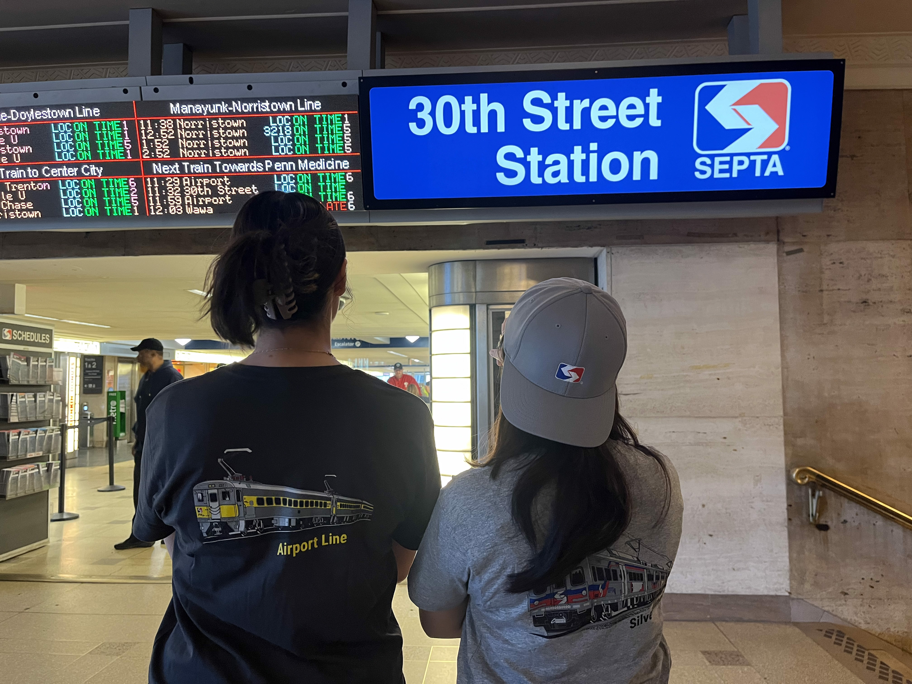
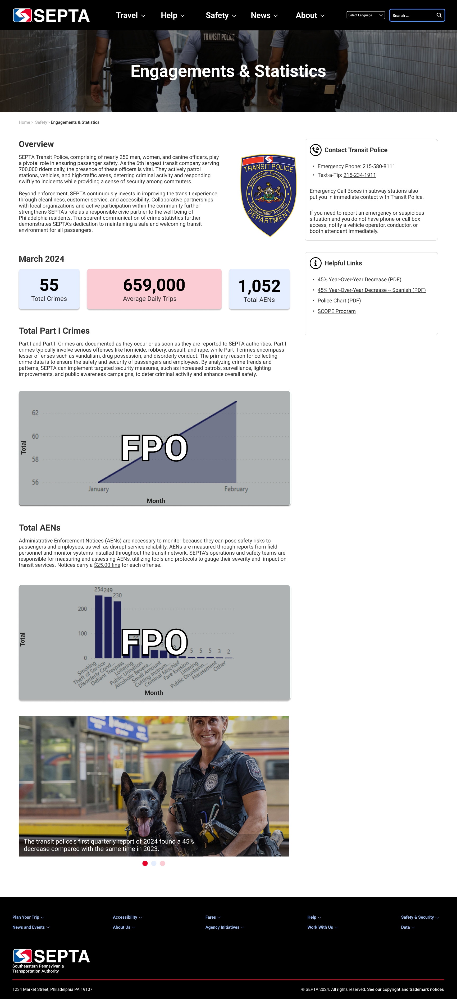
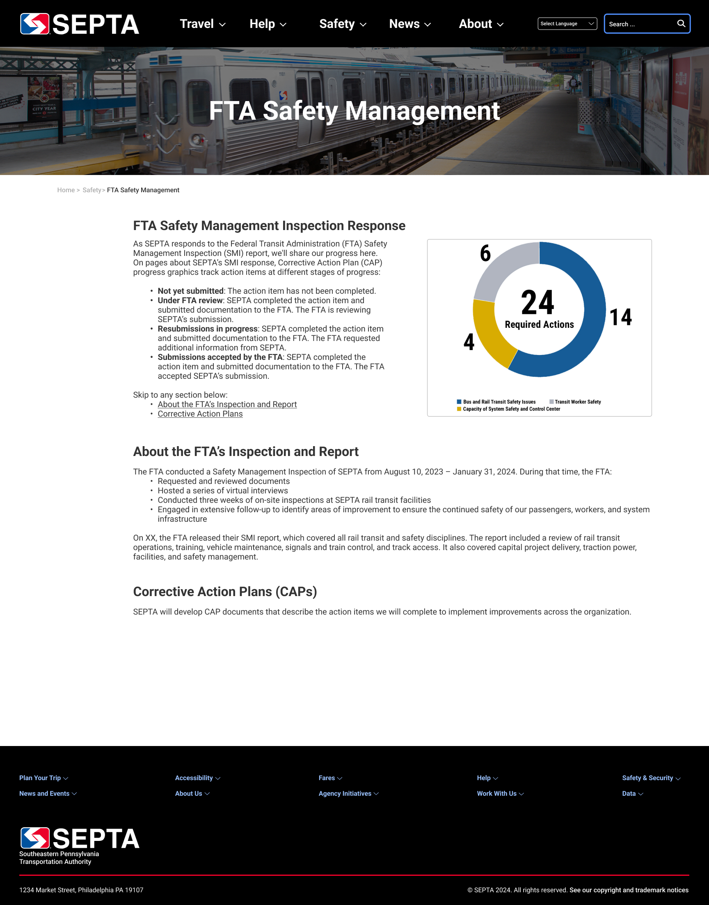

The Overview
Introduction
During my time at the Southeastern Pennsylvania Transportation Authority (SEPTA), I worked as a Web Developer & communications Associate. I managed web content, wrote critical transportation alerts, and supported multimedia projects across departments. SEPTA moves millions of riders throughout the Philadelphia region daily, so clear and timely communication is essential to the city's infrastructure.
This role immersed me in the fast-paced world of public transit communications. I learned to balance urgency with accuracy, collaborate across teams on creative projects, and master WordPress CMS. The experience was equal parts technical skill-building and creative collaboration, with photoshoots, design prototypes, and real-time problem solving defining my daily work.

Context and Challenge
Background
SEPTA's communications team manages a complex ecosystem of information—website updates, service alerts, and multimedia content while serving a diverse ridership that depends on accurate, accessible information. I joined the team to support their digital content operations and contribute fresh design perspectives to ongoing projects.
The Problem
The primary challenge was maintaining clarity and consistency across all digital touchpoints while responding to real-time service changes. Transit riders need immediate, accurate information about delays, detours, and advisories. Simultaneously, the website required regular updates and visual content needed editing.
Goals & Objectives
My objectives centered on maintaining SEPTA's web presence through WordPress CMS updates, writing clear and timely alerts that helped riders navigate service changes, and supporting multimedia projects that enhanced SEPTA's visual storytelling. I also deepeed my WordPress expertise and explored professional development opportunities.
Key Projects & Solutions
WordPress Content Management
I maintained and updated SEPTA's website using WordPress CMS, managing everything from schedule changes to service announcements. This hands-on experience taught me the intricacies of understanding taxonomies, optimizing for SEO, and maintaining design consistency across hundreds of pages.
WordPress became my daily toolkit. I learned to troubleshoot plugin conflicts, customize themes within brand guidelines, and structure content for maximum accessibility and usability. This technical foundation proved invaluable for understanding how design decisions translate into functional websites.
Real-Time Alerts & Advisories
Writing real-time alerts required precision and speed. When service disruptions occurred, riders needed immediate, clear information about what was happening, which routes were affected, and what alternatives were available. Every word mattered -- clarity could mean the difference between a smooth commute and frustration.
When crafting these messages, I lead with the most critical information, used plain language, specified routes clearly, and provided actionable next steps. This experience honed my ability to communicate under pressure while keeping the user's needs at the center of every message.
Design Prototyping & Research
One of my favorite projects involved designing Figma prototypes for potential website improvements.

The final prototypes demonstrated improved navigation patterns, specificalling with the SEPTA police-related pages. Presenting these designs to stakeholders taught me how to advocate for user-centered decisions while respecting organizational constraints and technical limitations.

The Results
Conclusion
At SEPTA, I gained practical expertise in WordPress that I now apply to every web project. Understanding content management from the inside out makes me a better designer. I now know what is technically feasible, what creates maintenance burdens, and how to structure information for both users and administrators. SEPTA also taught me that great UX it about clear, accurate information delivered exactly when someone needs it. Writing alerts for anxious commuters reinforced the importance of plain language and user empathy in every piece of content.